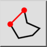

- Изберете желания
тип линия в лентата с инструменти за
опции.
- Посочете началната точка на първия сегмент от линията. Можете да използвате
мишката или да въведете координата в конзолата.
- Посочете крайната точка на първия сегмент от линията.
- Посочете крайните точки на допълнителните сегменти на линията. Щракнете
върху бутона "Затвори" в лентата с инструменти за опции, за да затворите
последователността:

Ако трябва да отмените отделен линеен сегмент, можете да го направите,
като щракнете върху бутона "Отмени"

- Ако искате да ограничите ъгъла или дължината на линейните сегменти, можете
да го направите, като щракнете върху бутона "Ограничаване на ъгъла или
дължината" и въведете дължина и/или ъгъл.